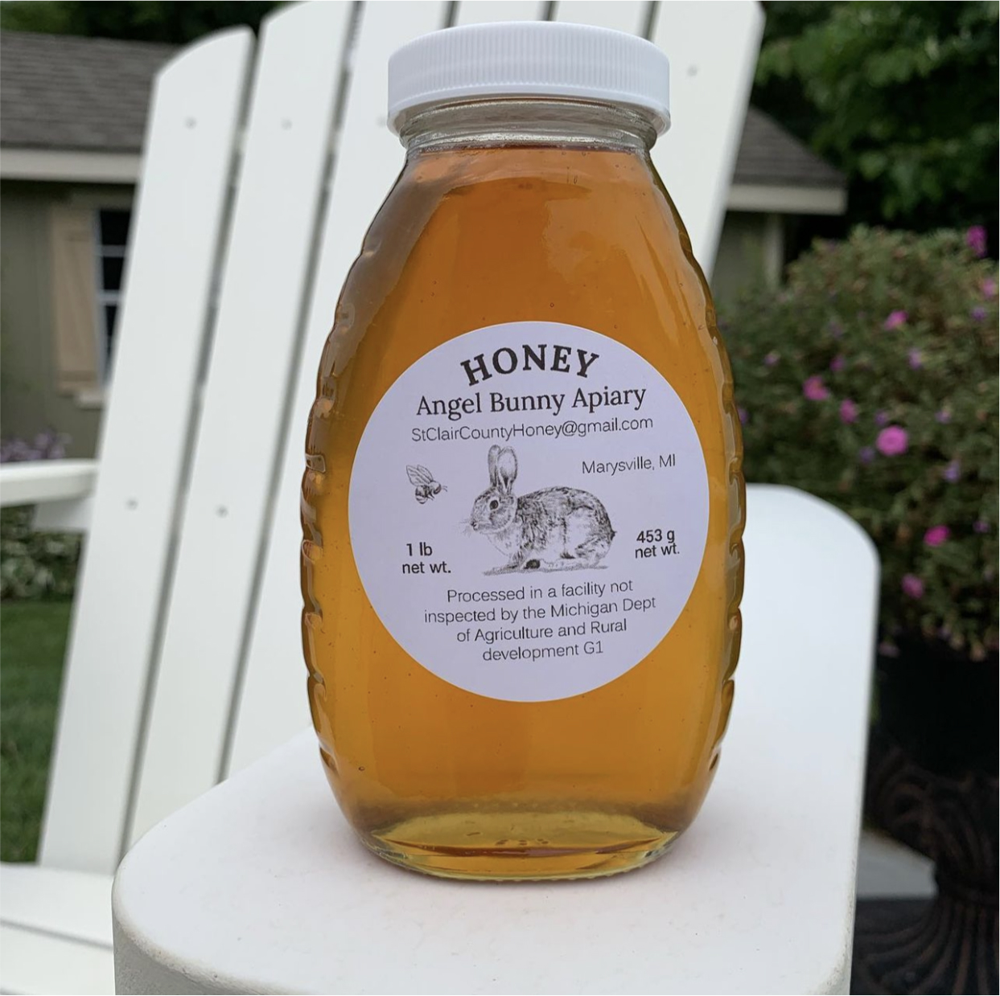
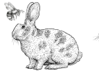

<footer>
  <section class="images">
    
    
    
    
    
  </section>
  <section class="page-bottom">
    
    <p class="copyright content-text">&copy; 2023 Angel Bunny Apiary</p>
  </section>
</footer>
